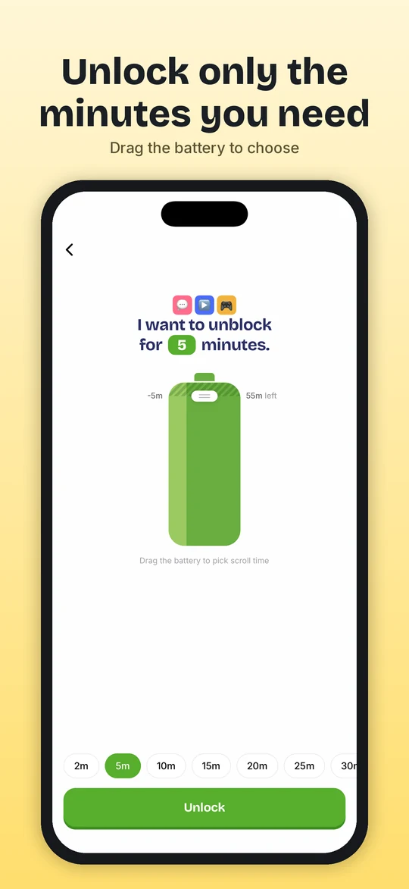
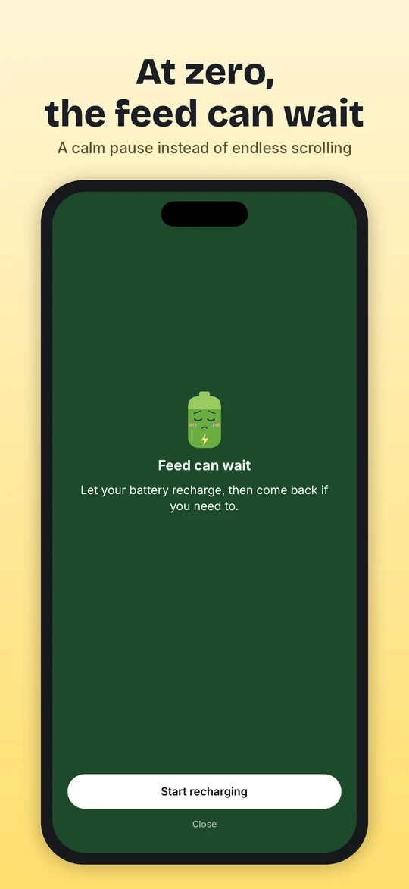
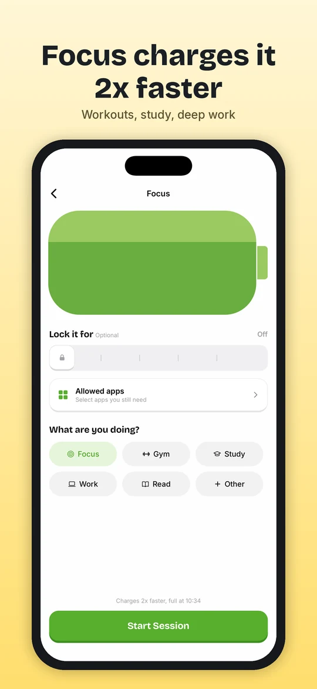

Screen time limit & app blocker for iPhone
Give your scrolling a battery.
ScrollVolt helps you cut your scrolling in half without deleting a single app. The apps you choose share one scroll battery: scroll and it drains, put the phone down and it recharges.
Download on theApp StoreFor iPhone · English, German, Spanish and Turkish

How it works
Choose your distracting apps
Pick the apps that steal your time: social media, short videos, games. They share one scroll battery that drains while you use them.

Unlock only the minutes you need
Drag the battery to unlock exactly as many minutes as you want. Every session starts with a decision.

At zero, the feed can wait
A calm shield screen replaces the app until the battery recharges. It refills on its own over the day.

Focus to charge 2x faster
Start a focus session for a workout, studying or deep work. Distracting apps stay locked and your battery charges twice as fast.
Everything in ScrollVolt
Half Challenge
Lowers your daily limit by 5, 10 or 15 minutes a day until you scroll half as much as you do today.
Progress you can see
Live battery, today’s battery chart, your weekly scroll trend and a log of every scroll and focus session.
Meet Volty
Your little battery buddy: full of energy when you take breaks, running low when you scroll too much.
Keep your apps
Nothing gets deleted. Your apps are only shielded when the battery is empty or a focus session is running.
Private by design
ScrollVolt is built on Apple’s Screen Time frameworks (Family Controls and DeviceActivity). Apple only gives the app anonymous tokens for the apps you choose, so ScrollVolt can’t even see which apps they are. Everything runs on your iPhone. No account, no tracking, no ads.
Pricing
ScrollVolt Premium is a yearly auto-renewing subscription with a 3-day free trial. Prefer to pay once? Choose the one-time Lifetime unlock. The App Store shows the price for your country.
Download on theApp StoreGuides
- How to limit screen time on iPhoneApple’s App Limits step by step, and what a scroll battery adds.
- How to stop doomscrollingFive steps that put a pause back between you and the next swipe.
- How to cut your screen time in halfA gradual plan: a few minutes less every day until you hit half.
- Phone and social media addiction: practical helpSigns to watch for and small changes that help more than guilt.
- A focus timer that blocks apps while you studyLock distracting apps for a study session and charge your battery 2x faster.
- A digital detox app for iPhone that doesn’t make you quitA daily detox you can keep, without putting your phone in a drawer.
Support
Get help
Questions, bugs or feature ideas? Open a support request and we'll get back to you.
Common fixes
- Apps won't unblock: Settings → Blocking Issues → Fix Now (re-grants Screen Time access).
- Apps won't re-block: Settings → Blocking Issues → Reset Blocking.
- Manage or cancel your subscription: iPhone Settings → [your name] → Subscriptions → ScrollVolt.